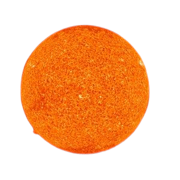

|  |
|
Nuestro Sol es una enorme bola de gas caliente cargada eléctricamente. Este gas con carga eléctrica se mueve, generando un potente campo magnético. El campo magnético del Sol pasa por un ciclo, denominado el ciclo solar. Cada 11 años más o menos, el campo magnético del Sol cambia completamente. Esto significa que los polos norte y sur del Sol cambian de lugar. Luego, demoran unos 11 años en volver de nuevo a la posición inicial. El ciclo solar afecta la actividad de la superficie del Sol, como las manchas solares causadas por los campos magnéticos. A medida que los campos magnéticos cambian, también lo hace la cantidad de actividad en la superficie del Sol. |